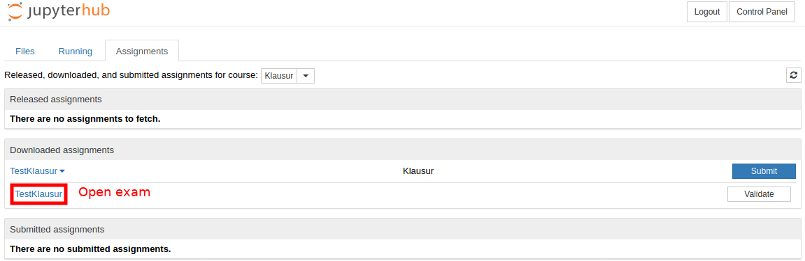
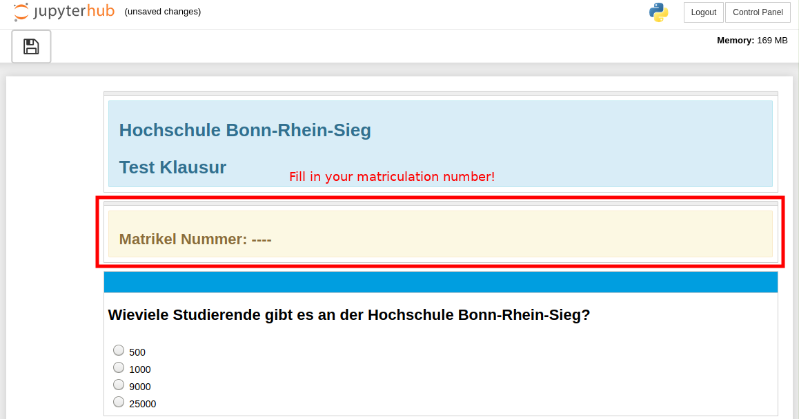
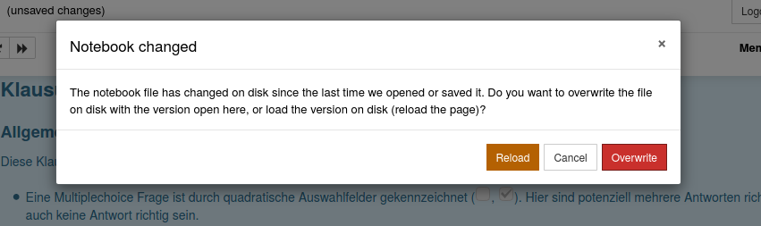

Fetch Exam¶
Before you can work on your exam you first have to fetch it.
2. Open the fetched exam¶
Do not open the exam in multiple tabs, windows or browser. You might overwrite unsaved changes!
3. Enter your matriculation number¶
4. Do not open the exam in multiple tabs, windows or browsers. You might overwrite unsaved changes!¶
In case you see this message, please ask the exam supervisor for what to do.